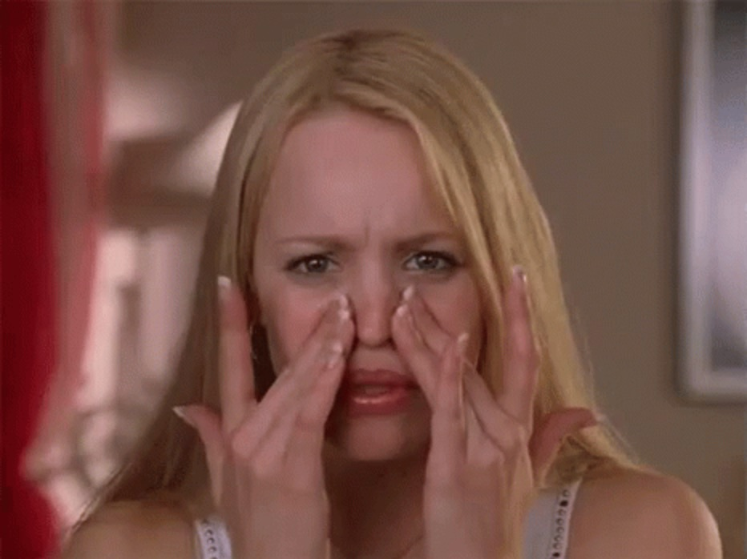

By Eileen Nguyen
Breaking out and treating acne are some of the most common struggles for teenagers and young adults. It can appear on areas of the body where pores are clogged, especially on the face, back, arms, and chest. There are many reasons why acne pop up even at the most inopportune of times: genetics, oily skin, stress, little sleep, not enough water, not exfoliating, not washing your face enough, etc. They also appear when pores are clogged with dirt, dead skin cells, and oil, which causes the skin to inflame and form a pimple(1). Even though it can be gruesome living with the pain and embarrassment of acne, the hardest part of the challenge is treating it and preventing future breakouts. So if you want to know how to reach that goal, take your diet, sleep, and hygiene routine into consideration.
Although it is highly debated that certain food induces acne, many researchers believe there might not be a correlation. It is a common belief that consuming dairy and foods that produce a lot of insulin are major factors for acne; however, various studies show that the reaction depends on the person and that they do not have the same effect on everyone(2). For instance, whenever I eat spicy foods I tend to break out a lot, but for other people they break out by eating chocolate or certain fruits. Because no one knows for sure if a certain type of food causes pimples, it is important to just focus on eating healthy and drinking enough water.
Another important factor to treat acne is sleep. Getting a good night’s rest with the reasonable eight hours is crucial, not only for pimples but for health as well. Having little to no sleep “increases the risk of psychological stress,” so a full night of sleep is extremely important(1). In addition, according to dermatologist Sonia Badreshia-Bansal, “[Psychological] stress [from sleep] increases glucocorticoid(3) production, which can lead to abnormalities in skin structure and function(1).” Not only will sleeping more boost your energy, it will also greatly reduce inflammation and pimples.
Along with maintaining a healthy diet and rest, having an established skincare routine will definitely help with the treatment process. The most general routine consists of washing your face with a cleanser (allow one day to exfoliate) and applying moisturizer on after. However, each routine is different for those who have oily skin, dark scars, red blemishes, deep scarring, and so on. Since I have oily skin, I created a routine for myself to treat my pimples and face, so if you know what skin type you are or what kind of acne or scars you have, you can research online or talk to your dermatologist about how you should be taking care of your acne. For those with oily skin, you can refer to two of the routines I use or simply create your own. For the first method, I wash my face with a cleanser containing 2% salicylic acid and pat my face dry to avoid tugging on the skin. After that, I apply moisturizer on my face, especially one that also has salicylic acid (some have 0.5%, but the most effective and also safe amount is 2%). Whenever I break out or have a few big, red blemishes, I tend to do a spot treatment at the end using a cream with 10% benzoyl peroxide, which is highly effective and recommended for severe cases. Another method you can refer to consists of washing your face with the cleanser, but instead of putting on moisturizer right after, you spread a thin layer of antibiotic medication called clindamycin phosphate topical solution (this product is prescribed by the doctor, and ask if you are able to use it for your case). Once it dries, you apply the benzoyl peroxide cream and wait until it settles into your skin (if you lay on your pillow right after, you can bleach your sheet, clothes, and hair if not dried completely) put on moisturizer in the end.
While there are many products and home remedies you can use to treat your acne, know that there are ways you might think you are doing right when you could in fact be harming your skin. First off, find a moisturizer that suits you and also doing the job instead of relying on your body lotion. The lotion is too strong and thick for your face and will block your pores from breathing, so finding a moisturizer light enough to let your pores breathe is extremely important. Exfoliating is key to getting rid of the dead skin cells, but watch out for ones with the crushed up walnut shells since it is too harsh on your delicate skin. Instead, look for ones with the microbeads inside or make a baking soda paste; both are gentler than the shells and are still able to exfoliate well. Also, do not pop your pimples, but if you get tempted enough to do so, make sure it is completely ripe and that all the white pus has been pushed out. Do not forget to place a band aid over to allow it to heal and prevent dirt from getting inside. Another important thing to do is to put on sunscreen after moisturizing in the morning. One way pimples become scars is when they are exposed to direct sunlight and UV rays, so protection is key if you do not want any scars. Finally, if you want to find ways to brighten your skin or treat scars, look up home remedies that are easy to use and cheap to get. Lemons are known to brighten and relieve your face from dark scars, so just cut one in half and rub it on yourself (this can be applied on other body parts). Olive oil can make your skin super smooth, so what you can do is massage it onto your face, arms, legs, or wherever, and let it sit for 15 minutes. After that, wash it off with cold water and already your body feels hydrated. There are countless of hacks and foods you can try, so if you are willing to take action against your blemishes, do so with care and patience.
1 Teens Health: Can I Prevent Acne?
2 WebMd: Can Foods Make You Break Out?
3 Definition: Any of a group of corticosteroids that are involved in the metabolism of carbohydrates, proteins, and fats and have anti-inflammatory activity